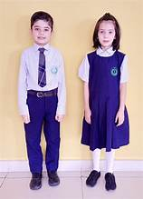

The designing of school curricula requires a conceptual foresight and imagination. Exhaustive evaluation and improvements are made year after year to keep the curriculum dynamic. All-out efforts are made to devise the most effective method for the implementation of the requirements of the curriculum. While selecting the Textbooks and designing Supplementary Reading Material, we generally keep in mind the “Students Learning Outcome” given in the Single National Curriculum (SNC) 2020. The Schools are affiliated with the respective: Board of Intermediate and Secondary Education. The curriculum for different classes is discussed below.
Physical Development
Social and Moral Development
Emotional Development
Language Development
Cognitive Development
The World Around Us
Health, Hygiene, and Safety
Creative Arts
Playgroup to Class Prep
The first educational step that a child takes at an impressionable age of three is in Playgroup and then on to Nursery. Bearing in mind that the foundation of a child’s personality is laid and two-thirds of his/her intellect develops at this age, we have created an environment and system of teaching which is entirely child-friendly. The students of these classes are housed in a separate block with their own work area, play-area and well-equipped activity room.
Steps are taken to achieve Holistic Development of students through the implementation of Early Childhood Care and Education Curriculum. Development is simultaneous and integrated and has been grouped into the following key learning areas:
Class 1 to 5
The basic concepts that a child was introduced to, in the Preschool, take a more firm footing here and the syllabus becomes more broad-based. The young learner is gradually exposed to subjects like Urdu, English, Mathematics, General Knowledge, Science and Social Studies besides the teaching of Islamiyat & Nazra Quran. Efforts are made to make the teaching more communicative and interactive to encourage students’ participation.
Class 6 to 8
The curriculum, for Classes VI to VIII, is designed to develop the well-rounded personality of the students. It includes academics as well as a variety of co-curricular activities. The academic subjects include Urdu, English, Mathematics, Science (Physics, Chemistry and Biology), Social Studies, Computer Education, Islamiyat, Arabic and Tarjuma tul Quran.
Class 9 to 10
Our schools are affiliated with the Board of Intermediate and Secondary Education Lahore. The curriculum prescribed by the Board is followed. We generally offer Science Group with Biology or Computer Science as an elective subject. However, the choice of Humanities Group is also available.
Teaching Faculty
The Teaching Faculty comprises 1265 professionally qualified, experienced and devoted teachers. The majority of the teachers possess Master’s Degree in their respective disciplines. Some of the teachers have MPhil degrees as well. Professional training, experience in teaching, mental alertness, self-confidence, commitment, general bearing and traits of a balanced personality are given due weight while recruiting the staff. Even for Nursery classes the same criterion is observed and Montessori trained teachers have been employed keeping in view the mental level and the age groups of the students.
Staff Development Centre
The Punjab School has its own training centre for professional development of the teachers. In-service training workshops are arranged throughout the year. These workshops are conducted not only by the professional trainers from different reputed institutions but also by the Master Trainers of The Punjab School.
Computer Education
Elaborative and adequate arrangements have been made for its teaching at all school campuses. Specific periods have been allocated in the school weekly timetable. There are 23, fully networked, computer laboratories with latest PC and Facilities. The schools continually upgrade and enhance their highly sophisticated and awe inspiring computing facilities.
Islamic Education
The curriculum includes Tajveed-ul-Quran, knowledge of fundamentals of Islam, learning of 'Namaz' with translation, 'Hifz' of selected Surahs and Ayaat from the Holy Quran, inculcation of social virtues, study of life of the Holy Prophet (صلى الله عليه وسلم ), and that of early caliphs and heroes of Islam. The school utilizes the services of qualified and dedicated teachers for Islamic education as well.
خَاتَم النَّبِیِینَ صلی الله عليه وآله وسلم
A large mosque has been built in the Township Campus where all members of the staff and the senior boys of the Boys High School offer their Zuhr prayer in congregation. The facility for offering Zuhr prayer is also ensured in other campuses where specific places have been reserved and maintained for this purpose. Separate rooms have been earmarked in each Girls School for offering prayers by the lady teachers and the girl students.
Hifz-e-Quran Programme
The School launched the Hifz-e-Quran Programme for boys in 2004. This is an optional programme offered presently in Township Campus only. This facility is offered to students of other campuses as well. The students after passing Class IV can opt for this stream. Preference is given to those students who secure at least 75% marks in the annual examination of Class IV with at least 90% marks in Quran as a subject. The duration of this programme is 3 years. After the completion of the Hifz, the students join the regular stream in Class VII. So far 574 students have completed the Hifz, and presently, 62 students are passing through the Hifz process.
School Publication
The school prepares and prints, every year, its own workbooks/worksheets for different classes to bridge gaps within the curriculum for better utilization of learning time. Workbooks and student diaries are provided to the students at the start of each academic session. The school also publishes its magazine “The Futurist” and Newsletters that reflect the literary skills of the faculty and the students.
The Punjab School
Township Head-Office
Phone: 042-35123451-5
Email: info@thepunjabschool.edu.pk
Address: Sector C-1, Block-2, Township Lahore.
Johar Town Campus
Phone: 042-35248882-4
Email: tpsjt@thepunjabschool.edu.pk
Address: 537-K, M.A. Johar Town, Lahore.
School Uniform
Uniform is a distinctive dress pattern reflecting tidy identity inside SUMMER / WINTER and outside the school. The school uniform must be worn by all the students all the time they remain in the school premises. The prescribed patterns/designs of the uniforms are available at all the uniform shops of the schools. The use of tie pins, chains, rings or any other piece of jewellery is not allowed. The staff and school administration will not be responsible for any loss or theft of jewellery items unauthorizedly brought to school.
Summer
Girls
Full-sleeves sky blue check frock White leggings White socks Black, buckled broad toe shoes
Boys
Full-sleeves sky blue check shirt Blue trousers with belt Black socks Black Oxford Shoes with laces

Winter
Girls
Full-sleeves sky blue check frock White leggings White socks Royal blue blazer with school Monogram/cardigan (full sleeves, round neck without pocket & slits) Black, buckled broad toe shoes
Boys
Full-sleeves sky blue check shirt Grey trousers with belt Necktie with dark and light blue stripes (prescribed pattern) Royal blue blazer with school monogram/Full sleeves grey jersey V-neck Royal blue cap with school monogram Grey woolen socks Black oxford shoes with laces